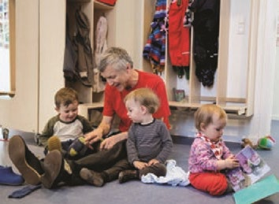
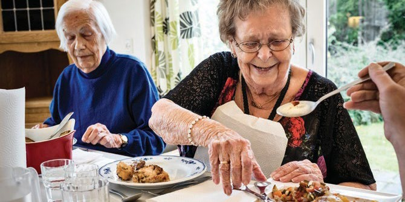

Fakta-ark 6: Det danske
Áudio
sidde 34
Fakta-ark 6: Det danske velfærds samfund
Læremateriale Til Medborgerskabsprøven
sidde 35
Velfærdssamfundet* i Danmark bygger på en slags gensidig aftale mellem borgerne og staten. På den ene side bidrager* borgerne ved, at de borgere, der kan, arbejder og betaler skat. På den anden side spænder* det offentlige et sikkerhedsnet ud under borgerne, som sikrer hjælp til dem, der ikke kan klare sig selv.
Læremateriale Til Medborgerskabsprøven Fakta-Ark 6: Det Danske Velfærdssamfund
Staten tager altså et stort ansvar for borgernes velfærd. Dvs., at staten har medansvar for, at borgerne kan føle sig trygge, og at de kan trives. På den måde er staten med til at sikre, at borgerne fx:
- kan få gratis skolegang og uddannelse
- kan få hjælp under sygdom
- kan få hjælp, hvis de mister arbejdet
- kan få hjælp, hvis de har eller får et handicap
- kan få hjælp, når de bliver ældre
Omvendt har borgerne et ansvar for at bidrage* økonomisk til velfærdsstaten ved at arbejde og betale skat. På den måde kommer der via skattesystemet penge til velfærden.
Princippet i det danske velfærdssamfund er med andre ord, at alle, der kan, skal bidrage til velfærden, og at alle, der har behov for det, kan få hjælp fra det offentlige uanset deres tilknytning til arbejdsmarkedet.
Dette fakta-ark handler om: • Velfærden i mange dele af borgernes liv • Pengene til velfærden – hvor kommer de fra?
Velfærden I Mange Dele Af Borgernes Liv
I den danske form for velfærdssam fund tager det offentlige sig af mange opgaver inden for fx sundhed, uddan nelse og det sociale område. Det offentlige tager altså et stort ansvar for borgernes velfærd. På den måde er det offentlige med til at sikre, at borgerne fx kan få gratis skolegang og uddannelse, lægehjælp og hjælp, hvis de ikke kan forsørge sig selv.
Udgifterne til velfærden betales bl.a. gennem skatter.

sidde 36
Borgere i Danmark har lige adgang til de fleste offentlige ydelser*. Alle uanset indkomst har fx mulighed for at få gratis lægehjælp. Nogle ydelser gives kun til personer uden indkomst eller formue, fx kontanthjælp, eller til personer med en lav indkomst, fx boligstøtte. På nogle områder kan folk med særlig lav indkomst få hjælp hos kommunen til at betale en konkret udgift, fx en del af tandlæge regningen.
Læremateriale Til Medborgerskabsprøven Fakta-Ark 6: Det Danske Velfærdssamfund
Børn
Det offentlige sørger fx for vuggestue, børnehave og dagpleje, så børn kan blive passet om dagen, mens deres forældre arbejder. Det er normalt ikke gratis at få et barn passet. Man skal som regel selv betale en del af udgifterne.
Forældrene kan få en ’børnecheck’ (børne- og ungeydelse), hvis de har børn under 18 år. Forældre, der har særlig høj indkomst, får en mindre ydelse eller slet ingen ydelse, afhængig af deres indkomst. For udlændinge gælder der særlige regler.
Skole
Børn har ret til at gå gratis i skole i folkeskolen. Og efter folkeskolen har de unge mulighed for at tage en gratis ungdomsuddannelse (fx på en erhvervsskole eller et gymnasium). Senere hen kan de tage en gratis videregående uddannelse (fx på et erhvervsakademi, en professionshøjskole eller et universitet). Normalt har man mulighed for at få økonomisk støtte, når man studerer. Det hedder Statens Uddannelsesstøtte (SU). SU’en er høj i Danmark sammenlignet med, hvad man kan få som støtte til uddannelse i de fleste andre lande.
Forældrene er med
I Danmark har man en lang tradition for, at forældrene er aktive deltagere i, hvad der sker i skoler og daginstitutioner. Der er skolebestyrelser med forældre repræsentanter i folkeskolen, og der er normalt forældrebestyrelser i daginsti tutioner. Det står i loven. Men desuden vælges der normalt forældreråd eller lignende i de enkelte skoleklasser – et arbejde, der typisk går på skift. Det forventes, at forældre påtager sig denne opgave, samt at de i øvrigt møder op

sidde 37
ved forældremøder o.l. Det er også forklaringen på, at forældre til børn i skoler og daginstitutioner i Danmark langt mere end i de fleste andre lande føler, de har stor indflydelse på, hvad der foregår i skolen.
Læremateriale Til Medborgerskabsprøven Fakta-Ark 6: Det Danske Velfærdssamfund
Økonomisk hjælp, hvis man ikke er i arbejde
For borgere, som ikke er i arbejde, findes der forskellige former for økonomisk hjælp fra det offentlige.
Hvis man er syg i længere tid, er der mulighed for at få sygedagpenge, hvis man har optjent retten til det enten ved at arbejde eller som medlem af en a-kasse. Hvis man ikke er i stand til at forsørge sig selv, fordi ens arbejdsevne er begrænset, kan løsningen fx være fleksjob, hvor man arbejder og tjener en del selv og får resten i offentlig ydelse. Hvis man har en varig og væsentlig nedsat evne til at arbejde, kan man få førtidspension.
Når man bliver ældre, har man mulighed for at få folkepension. Formålet med folkepensionen er, at ældre skal have mulighed for at klare sig selv, når de ikke arbejder mere. Man kan i 2026 få folkepension, fra man er 67 år. Aldersgrænsen for at få folkepension bliver gradvist hævet i takt med, at befolkningen lever længere.
Man skal som hovedregel være dansk statsborger, have fast bopæl i Danmark og have boet i Danmark i mindst tre år fra det fyldte 15. år til folkepensions alderen for at få ret til førtidspension eller folkepension. Har man boet i landet i mindre end 40 år, får man pension i forhold til, hvor mange år man har boet her. Der gælder særlige regler for personer, der bor i udlandet eller er EU-stats borgere eller flygtninge. Mange pensionister får udbetalt pension ved siden af folkepensionen. Det skyldes at de, i forbindelse med deres arbejde, har indbetalt til pensionsordninger (arbejdsmarkedspension).
Mange har herudover frivillige pensionsordninger, som de selv betaler til, når de kan. Det kan fx være pensionsordninger, som man aftaler med sin bank eller forsikringsselskab.
sidde 38
Bolig
Læremateriale Til Medborgerskabsprøven Fakta-Ark 6: Det Danske Velfærdssamfund
Hvis man bor til leje og har en lav indkomst, kan man i nogle tilfælde få bolig støtte. Boligstøtten gives til at dække en del af huslejen. Den afhænger blandt andet af, hvor meget boligens beboere tjener, størrelsen på huslejen og boli gens størrelse. Der gælder særlige regler for pensionister. Pensionister med lav indkomst kan ofte få en højere boligstøtte.
Sundhed
Personer med bopæl i Danmark har ret til gratis behandling hos egen almen praktiserende læge eller speciallæger. Og alle, som er tilmeldt Det Centrale Personregister (CPR), får et sundhedskort (”det gule kort”). Næsten alle er i dag medlem af sikringsgruppe 1, hvor man er tilmeldt en bestemt almen praktise rende læge (egen læge) og skal have henvisning til speciallæge (undtagen øreog øjenlæge), hvis lægehjælpen skal være gratis.
Hvis man bliver syg, henvender man sig normalt først til sin egen praktiserende læge, og behandlingen er gratis. Lægen kan henvise til en speciallæge eller sygehus.
Borgere har ret til gratis behandling på et offentligt sygehus. Der er også enkelte private sygehuse, hvor man normalt skal betale for behandlingen. Men hvis der er lang ventetid på at blive behandlet på det offentlige sygehus, kan man nogle gange blive henvist til et privat sygehus. Hvis man bliver henvist til et privat sygehus fra et offentligt sygehus, er behandlingen på det private sygehus gratis. På nogle områder skal voksne dog selv betale en del af udgifterne. Det gælder fx udgifter til medicin.
Kultur
På det kulturelle område giver det offentlige støtte på mange forskellige måder. Det offentlige giver meget støtte til folkebibliotekerne. Her kan man låne bøger gratis. På mange biblioteker kan man også låne eller bestille bøger. Bibliote kerne har også bøger på andre sprog end dansk. Man kan låne lydbøger, e-bøger, magasiner, musik, film og computerspil. Der er gratis adgang til computere og internet, man kan læse aviser, og man kan få hjælp til at finde bestemte infor mationer eller materialer. På bibliotekerne ligger der også mange nyttige pjecer fra organisationer og offentlige myndigheder.
Foruden biblioteker er der mange andre former for støtte til kulturen i Danmark. Der er støtte til foreningslivet, fx inden for sport og idræt, og til kulturlivet, fx museer, teatre, festivaler og meget mere.
sidde 39
Transport
Læremateriale Til Medborgerskabsprøven Fakta-Ark 6: Det Danske Velfærdssamfund
Det er gratis at køre på veje og broer i Danmark. På to broer, Øresundsbroen og Storebæltsbroen, skal man dog betale for at køre over.
Det offentlige giver støtte til kollektiv transport som busser, tog og færger.
Penge Til Velfærden – Hvor Kommer De Fra?
Der er store udgifter forbundet med et velfærdssamfund som det danske, og der er derfor behov for mange indtægter til det offentlige. Danmark er da også et af de lande i verden, hvor borgerne betaler mest i skat.
Pengene til velfærden kommer bl.a. fra den skat, borgerne betaler af deres løn. Men skatten er ikke lige stor for alle. Princippet for skatten i Danmark er, at jo mere man får i løn, jo større del af sin løn skal man betale i skat.
Man er også med til at betale for udgifterne til velfærd på andre måder. Den danske moms på 25 procent på de varer, man køber, er blandt de højeste i Europa. Der er også særlige afgifter* på mange varer, fx biler, benzin, elektricitet, alkohol, cigaretter, batterier, engangsservice og bæreposer fra supermarkedet. Disse afgifter er også begrundet med hensyn til miljø og sundhed.
Desuden får velfærdsstaten betydelige indtægter fra selskabsskatter, ejen domsskatter og på afkastet på danskernes pensionsopsparing, der er blandt de største i verden.
Fonte: Læremateriale til Medborgerskabsprøven, SIRI.